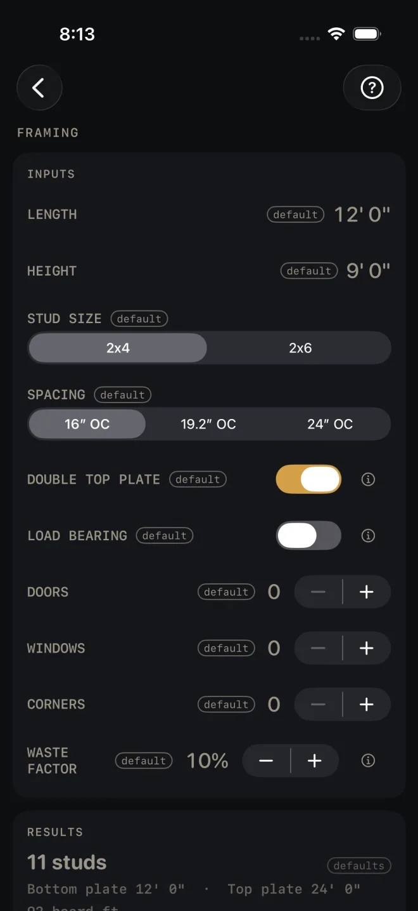
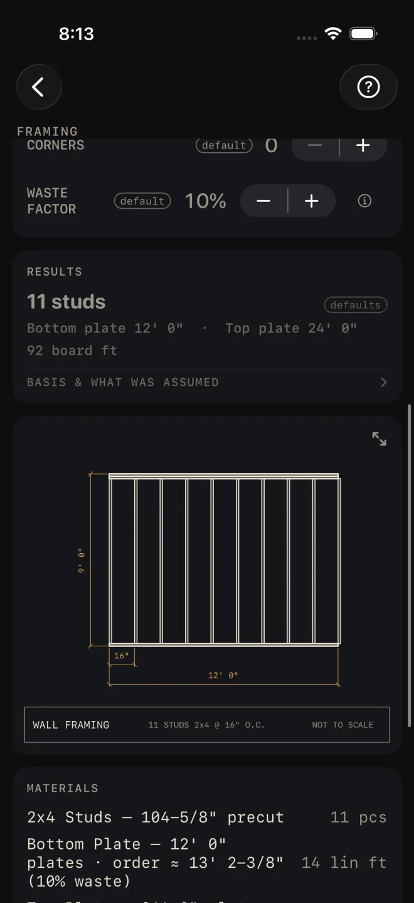

Framing
What it's for
Counting the lumber for one framed wall. You give it the wall's length and height, the stud size and spacing, and any doors, windows and corners, and it gives you the stud count, the plate lengths, board feet, an elevation drawing and a material list with the stud length to buy. It does not check the wall against code. On a bearing wall it sizes the headers and jack studs from the IRC header table. With LOAD BEARING on, a line under those rows names the table.
Step by step
This example uses the numbers the screen opens with.

1 2 3 4 5- LENGTH — the wall, end to end along the plate. The example is 12' 0".
- HEIGHT — the framed wall height, plates included. The example is 9' 0".
- STUD SIZE, 2x4 or 2x6, and SPACING on center.
- DOUBLE TOP PLATE — leave it on for a second plate lapped over the first. It doubles the top plate length and changes the stud length.
- LOAD BEARING — turn it on if the wall carries floor, ceiling or roof. Three more rows appear, and they decide the header size and the jack studs at each opening: BUILDING WIDTH, GROUND SNOW for your area, and WALL SUPPORTS, which is what sits on the wall, from roof and ceiling only up to two floors above.
- DOORS and WINDOWS — how many of each. Once a count is above zero its width row appears: DOOR R.O. WIDTH or WINDOW R.O. WIDTH. Enter the rough opening, not the unit size. A HEADERS row also appears, Lumber or LVL. With Lumber you can turn on FLITCH PLATES to add steel plates to the buy list. Flitch plates need an engineer, and the list says so.
- CORNERS — how many ends of this wall are corners. Each one adds studs.
- WASTE FACTOR — the extra you buy over the measured quantity.
- Read the answer: 11 studs.
Reading the results

1 2 3 4- The headline is the number of studs to buy. It includes the layout studs, the extra studs at each opening and corner, and the waste factor.
- The lines under it. Bottom plate and Top plate are the lengths you cut, with no waste in them. The top plate is twice the wall when the double plate is on. Board ft covers the studs and plates.
- BASIS & WHAT WAS ASSUMED — tap it to see how board feet were worked out. They use the nominal size, 2x4 or 2x6, not the actual size.
- The drawing is the wall in elevation with its length, height and spacing, and any openings. Pinch to zoom, drag to pan, double-tap to reset. The expand button opens it full screen. See Reading the drawing.
This screen has no pass or fail line. Nothing on it turns red.
 5
6
5
6
- MATERIALS — the stud row gives the stud length to buy. For a standard wall height with a double top plate that is the precut stud. For any other height it is the wall height less the plates. Each plate row shows the cut length, then the order length with waste, then the lineal feet to buy. Openings add header rows.
- CUT SHEET, the small button beside it, CUT LIST and SEND LIST stay grey until you change at least one input, and the line under them says so. SAVE stays lit, but while every input is still a default a tap only answers Enter your job's numbers first and saves nothing. CUT SHEET makes a PDF, the small button beside it shares the material list only, SAVE keeps the result in History, CUT LIST puts the list on the Lock Screen and SEND LIST sends a checkable list to another phone.
Framing is free. The cut sheet, cut list, send list and History buttons are part of Pro, a
one-time purchase. See Free and Pro.
Common mistakes
- Reading the plate lines as the order. The results give the plate lengths you cut. The lineal feet to buy, with waste, are in MATERIALS.
- Adding waste twice. The stud count already has the waste factor in it.
- Entering the door or window size. The width rows want the rough opening.
- Leaving LOAD BEARING off on a bearing wall. The headers and jack studs are then sized for a partition.
- Doing a whole house in one go. The screen frames one wall. Run each wall on its own.